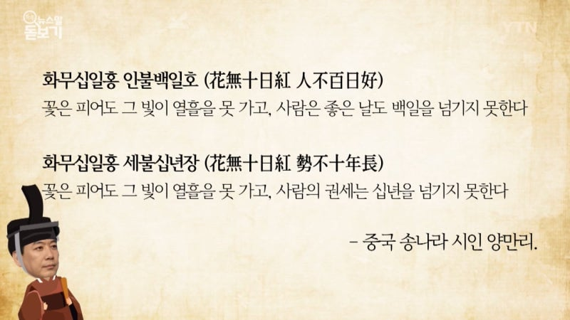

뭐 그런거지

뭐 그런거지
어쩌라고 니가 뭘 할 수 있는데? ㅋㅋㅋㅋㅋㅋㅋㅋㅋㅋㅋㅋㅋㅋㅋㅋ
니도 할수있는게 없지롱
존나 찐따같네 진짜 ㅋㅋㅋㅋㅋ
너글트럼프파파임?
비추박히면 '트럼프 수호단 존나많네 ㅅㅂ' 이럴듯ㅋㅋㅋ
왜 뿔남?
힘들어?
화무십일홍이라기엔 2기까지 했잖아 시발
1기에서 탄핵됐어야 딱 좋았는데
그럼 화무이십일홍이라고 하자
수학 잘하네 수학과임?
그럼 딱 십년 언저리네
ㅋㅋㅋㅋㅋㅋㅋㅋㅋ
남은 2년 재미지겠네 지켜보는 입장에선
"형님 권무십일홍이라고 아십니까?"
"그거 나보고 하는소리냐?"
그럼 이제 다시 PC가 득세하고 이민자들 ㅈㄴ 받기 시작하는거야??
Pc주의는 이미 패망한 사상임.? Pc주의를 전면에 내세웠던 해리스가 진 순간부터 pc는 패배한 카드가 된거지. 미국 엘리트들이 멍청해보이는건 진짜 멍청한게 아니라 대다수의 멍청이들 입맛에 맞춰 정책을 가져오기때문이거든. 물론 트럼프는 멍청이가 맞음
저 사진은 진짜 역사에 길이남을 사진일듯
트럼프라는 인간은 인생에서 해쳐먹기만 한 인간이야 대통령으로 해처먹은 건 해처먹은 것도 아닌 정도로
일기장임?